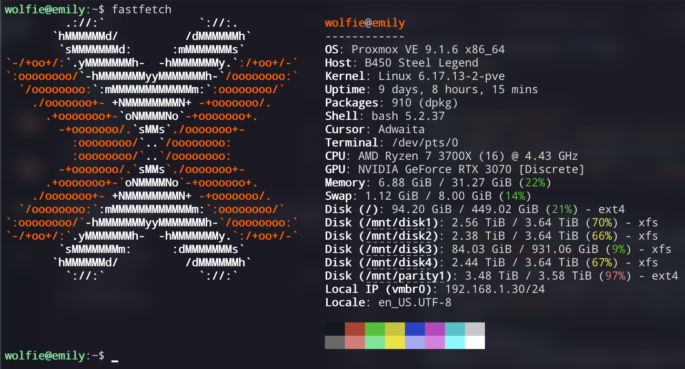

emily: my media server
back - 2026 06 20
I've run a media server since the COVID lockdowns so I can watch legally acquired movies and shows without needing to rely on Netflix or Disney+. With the relatively low cost, before AI took all the storage, it seems worth it to avoid the ad-riddled plans that everyone has now.
Most of this is based on the work by Alex at KTZ Systems and their work on Perfect Media Server, but with some QoL improvements such as Grafana monitoring and whatnot.
--
the hardware
Emily is a pulled-together group of parts that I had lying around from old PC builds that were otherwise gathering dust and not being used (that said, they could have been sold, but ya know :q)
Motherboard: Asrock B450 Steel Legend
CPU: AMD Ryzen 7 3700X
RAM: 32GB DDDR4 (Mixed speeds, I know it's bad for Ryzen, but this isn't doing anything intensive)
GPU: Nvidia RTX 3070
Storage: 4x 4TB Seagate Barracuda 5400rpm, 1x 1TB WD Blue 7200rpm & 1x 512GB WD Blue SN570
PSU: Corsair RM750x
Case: Some no name brand with enough space for all the parts
OS: Proxmox VE

--
the software
Everything from Perfect Media Server has been set up on Emily (SnapRAID, mergerfs, Docker, etc.), but these are the bits that I added.